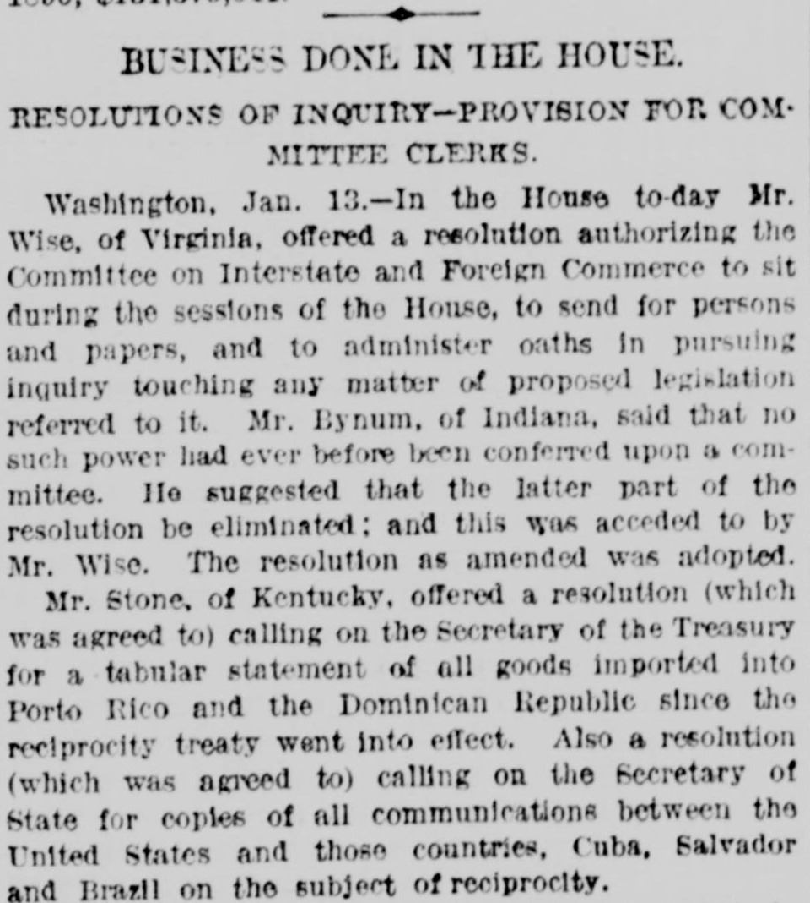
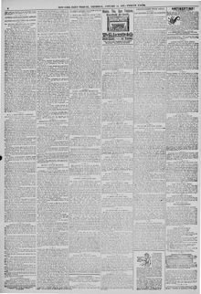

Stone, of Kentucky, offered a resolution (which was agreed to) callingStone, de Kentucky, ofreció una resolución (que fue aprobada) por la que se solicitaba
New-York Tribune. New York [N.Y.], January 14, 1892. Page 2. View the originalVer el original


See the full pageVer la página completaThe New-York Tribune reported that the House of Representatives adopted resolutions introduced by Representative Stone of Kentucky requesting detailed trade data on reciprocity treaties. The measures directed the Treasury and State departments to provide tabular statements of imports into the Dominican Republic and Puerto Rico, as well as diplomatic communications regarding trade agreements across Latin America.El New-York Tribune informó que la Cámara de Representantes aprobó resoluciones presentadas por el representante Stone de Kentucky en las que se solicitaban datos comerciales detallados sobre tratados de reciprocidad. Las medidas ordenaban a los departamentos del Tesoro y de Estado proporcionar informes tabulares de las importaciones hacia la República Dominicana y Puerto Rico, así como comunicaciones diplomáticas relativas a acuerdos comerciales en toda América Latina.
FULL TEXT:TEXTO COMPLETO:
BUSINESS DONE IN THE HOUSE.NEGOCIOS HECHOS EN LA CÁMARA.
RESOLUTIONS OF INQUIRY—PROVISION FOR COMMITTEE CLERKS.RESOLUCIONES DE INVESTIGACIÓN—PROVISIÓN PARA SECRETARIOS DE COMITÉS.
Washington, Jan. 13.—In the House to-day Mr. Wise, of Virginia, offered a resolution authorizing the Committee on Interstate and Foreign Commerce to sit during the sessions of the House, to send for persons and papers, and to administer oaths in pursuing inquiry touching any matter of proposed legislation referred to it. Mr. Bynum, of Indiana, said that no such power had ever before been conferred upon a committee. He suggested that the latter part of the resolution be eliminated; and this was acceded to by Mr. Wise. The resolution as amended was adopted.Washington, 13 de enero.—En la Cámara hoy el Sr. Wise, de Virginia, ofreció una resolución autorizando al Comité de Comercio Interestatal y Extranjero a sentarse durante las sesiones de la Cámara, a llamar personas y documentos, y a administrar juramentos en la prosecución de la investigación sobre cualquier asunto de legislación propuesta referido a él. El Sr. Bynum, de Indiana, dijo que nunca antes se había conferido tal poder a un comité. Sugirió que la última parte de la resolución fuera eliminada; y esto fue aceptado por el Sr. Wise. La resolución según enmendada fue adoptada.
Mr. Stone, of Kentucky, offered a resolution (which was agreed to) calling on the Secretary of the Treasury for a tabular statement of all goods imported into Porto Rico and the Dominican Republic since the reciprocity treaty went into effect. Also a resolution (which was agreed to) calling on the Secretary of State for copies of all communications between the United States and those countries, Cuba, Salvador and Brazil on the subject of reciprocity.El Sr. Stone, de Kentucky, ofreció una resolución (que fue acordada) pidiendo al Secretario del Tesoro una declaración tabular de todas las mercancías importadas a Puerto Rico y la República Dominicana desde que el tratado de reciprocidad entró en efecto. También una resolución (que fue acordada) pidiendo al Secretario de Estado copias de todas las comunicaciones entre los Estados Unidos y esos países, Cuba, Salvador y Brasil sobre el tema de la reciprocidad.